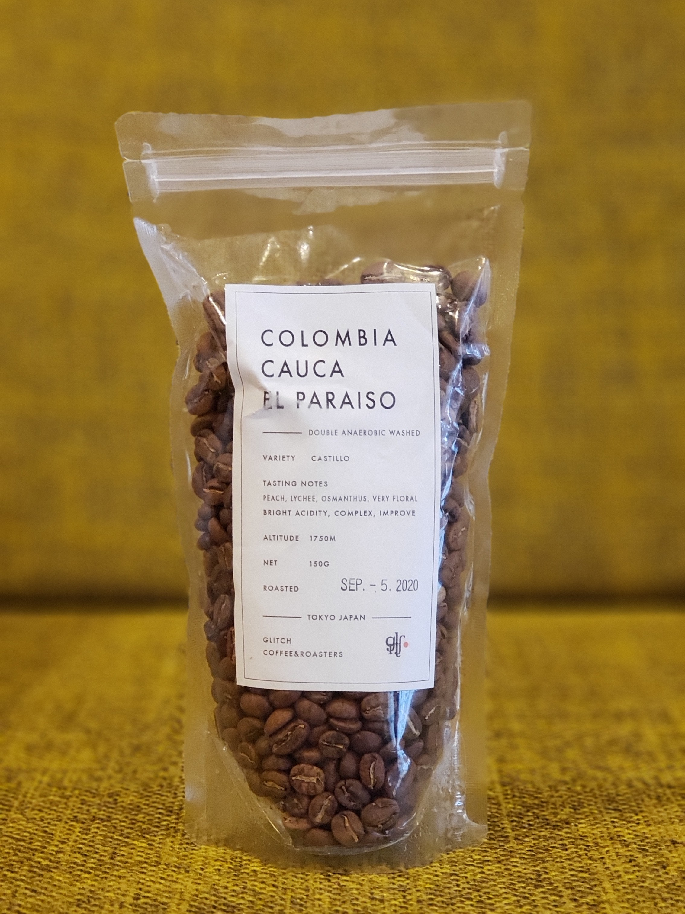
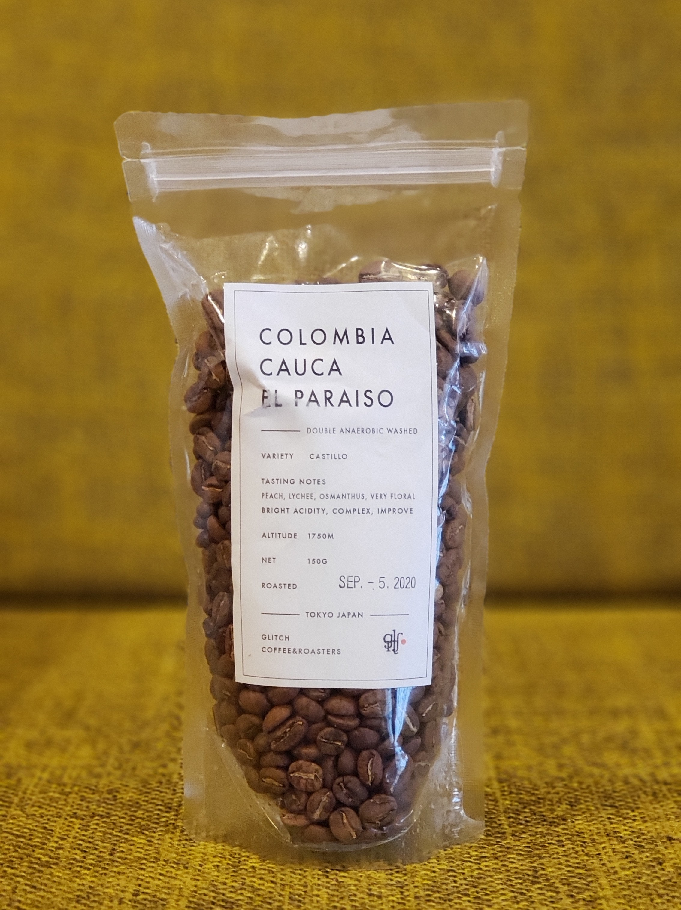

Progress Coffee
皆さんと一緒に育てていくコーヒーの移動販売車
珈琲好きな学生が腕を磨きながら淹れる一杯。プロのバリスタではない私たちがお客様の反応とともにより良い味を追求していきます。
DRINK MENU
当移動販売車では自家焙煎豆を使用した下3種類をお楽しみいただけます。飲み物についてご不明な点がございましたら、店員までお尋ね下さい。
POUR OVER
ICED ¥450-/HOT ¥400-
ESPRESSO
Espresso ¥400-
Cafe Latte (ICED/HOT) ¥450-
Americano (ICED) ¥400-
COLD BREW
¥300-
HISTORY
traning history
北欧旅行初日はフィンランドから。石畳の上を路面電車と車が並走している光景はまさに自分が想像していたものと同じだったので、その街に自分がいることが少し不思議な気分でした。
ヘルシンキのデザイン地区にはマリメッコを筆頭に日本でも有名なインテリアショプがあります。北欧に来たからには北欧雑貨店に行くのが大きな目標でした。ArtecやPAPERSHOP、marimekkoを巡ったあと、ヘルシンキから離れてiittalaへ。ただただ最高で充実した時間を過ごすことができました。
年末年始訪れた北欧は太陽が出ている時間が短く,夕方4時には街が暗くなります。
ジブリの世界を彷彿とさせる街並みは遺産と呼んでも遜色ないほどの建物が多くありますが、それらの建物の大半は現役で役所や住宅として使われています。
OUR SHOP
On weekdays at 10-18 (自由が丘)On Saturdays at 11-16 (洗足池) 営業日および出店場所は日によって異なりますので、ご来店の前に必ずこのページをご確認ください
洗足池 / 自由が丘


 
